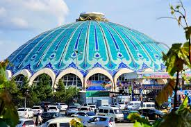
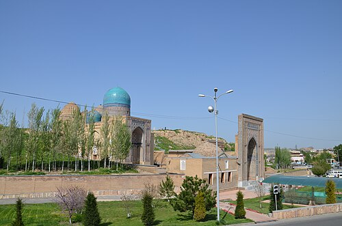

Hazrati imom majmuasi (shuningdek, Hastimom) — Toshkent shahrining Olmazor tumanida joylashgan va XVI—XX
asrlarga oid meʼmoriy yodgorlik.
Tashkent City Bogʻi — Toshkent shahri markazidagi shahar bogʻi, Oʻzbekistondagi eng yirik istirohat bogʻi.

Chorsu (Forscha: Chor-su – „toʻrt yoʻl“ yoki „toʻrt ariq“) nomi bilan mashhur boʻlgan „Eski Juva“ („Eski
minora“) — Toshkent shahridagi tarixiy yodgorlik. U 16-asrda qurilgan va 19-asrda qayta tiklangan.
Samarqand
Registon maydoni yoki Registan – Oʻzbekistonda, Samarqandning Registon maydonida joylashgan 3 ta madrasadan
(Ulugʻbek, Tillakori, Sherdor) tashkil topgan meʼmoriy majmua.

Shohizinda — Samarqanddagi meʼmoriy yodgorlik (11—19-asrlar); Afrosiyob tepaligi jan.da joylashgan
qabristondagi maqbaralardan hamda masjid, minora va madrasadan iborat ansambl.
Goʻri Amir yoki Amir Temur maqbarasi (15-asr boshi – 1405-yil) – Samarqanddagi meʼmoriy yodgorlik. Xalq
orasida Goʻri Amir yoki Goʼri Mir (Mir Sayyid Baraka) deb nomlanib kelinadi.